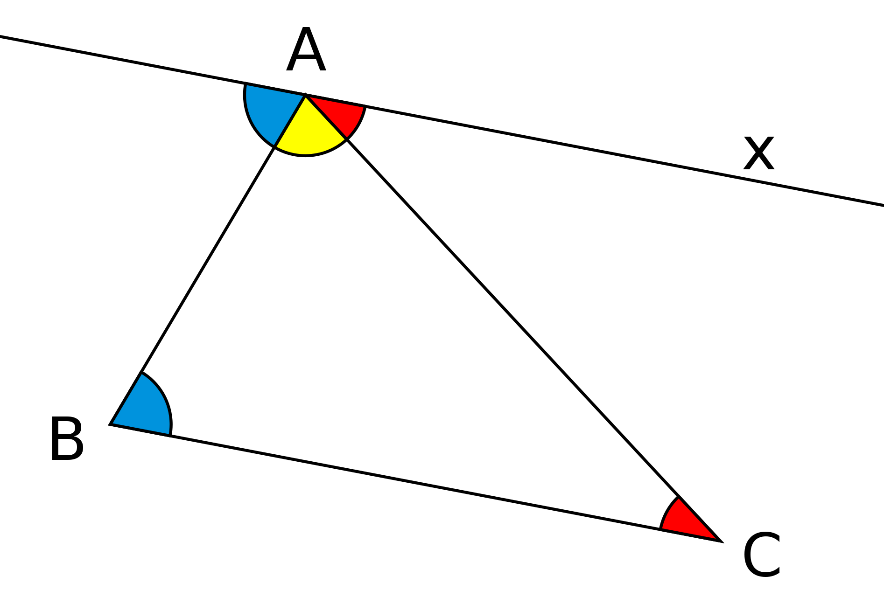

Computer Proofs and
Artificial Intelligence
for
Mathematics
Siddhartha Gadgil
Department of Mathematics
Indian Institute of Science, Bangalore
- Generative AI has become a popular sensation.
- In particular Large Language Models can generate code, database queries etc.
- Much less well known are the major advances in computer proofs, both within mathematics and in industry.
- Computer proofs complement very well generative AI.
- I will describe computer proofs, generative AI and how they work together.
- I hope many lessons from this are useful for beyond users of computer proofs.
(Mathematical) Proofs
A proof: Sum of Angles in a Triangle
- Consider a triangle $ABC$. 
- Draw a line through $A$ parallel to $BC$.
- Use equality of interior opposite angles.
- Use angles on a line add up to 180 degrees.
Another proof: infinitely many primes
- For any $n$, we show that there exists a prime $p$ such that $p > n$.
- Consider the number $n!+1$, where $n! = 1 \times 2 \times \dots \times n$.
- Let $p$ be the smallest prime factor of $n!+1$.
- If $p \leq n$ then $p | n!$ so $p \nmid n!+1$.
- Hence $p$ is a prime greater than $n$.
What is needed for proving
- Intuition, Creativity: Analogies, Associations etc.
-
Auxiliary Constructions:
- the parallel line
- the term $n! + 1$.
-
Theorems/Definitions to use.
-
-
Technical Work: Deductions and Computations.
-
Judgement of correctness.
Generative AI and Proofs
- A model such as GPT-4 is:
- Good at intuitive tasks.
- Weak at technical tasks: but can delegate.
- Terrible at judging whether reasoning is correct.
Formal Proofs
- A formal proof is a sequence of deductions from assumptions and axioms using precise rules.
- A formal proof can be easily checked by a computer or a human.
- Writing (and checking) a fully formal proof is difficult and tedious except in the simplest cases.
- With advances in Logic/PL, specifically Dependent Type Theory, formal proofs are shorter, more modular and more transparent.
- Computers can assist in both verification and finding formal proofs.
Informal proofs
- In practice mathematical proofs are informal; consisting of a sequence of assertions and hints as to why they are true.
- A reader has to judge whether the proof is correct.
- A correct proof must: be precise; have n false statements; use hypothesis without which the result is false; etc.
- In practice there are many proofs, including those published in top journals, that are wrong.
- Proofs are a defining feature of mathematics; but a wrong proof never killed anyone.
Formal methods
Proofs elsewhere
Formal methods
- We specify (describe) software, hardware, networking protocols, cryptographic protocols, even tax codes in precise mathematical terms.
- We give mathematical proofs of correct behaviour, which are computer verified.
- This gives a much greater certainty of correctness.
- However, proofs are much harder than tests.
- As technology for formal proving becomes better, the much greater assurance of correctness will encouraging proving over testing in more situations.
TimSort
- Tim Peters developed the Timsort hybrid sorting algorithm in 2002 – a clever combination of ideas from merge sort and insertion sort designed to perform well on real world data.
- This was initially developed for Python, but was ported to Java and was used as the default sorting algorithm for Android SDK, Sun’s JDK and OpenJDK.
- This means that the number of computers, cloud services and mobile phones that use TimSort for sorting is well into the billions.
Proving TimSort?
- Having successfully computer verified Counting and Radix sort implementations in Java, the European envisage group turned to verifying TimSort.
- They were not able to verify correctness.
- A closer analysis showed that this was because the algorithm was wrong.
- The researchers could find, and suggest a fix for, the bug.
Byron Cook (AWS):
The storage team, for example, is able to be much more agile and be much more aggressive in the programs that they write because of the formal methods. They're able to write code that otherwise they might not want to deploy because they wouldn't be as confident about it, and they're deploying four times as fast.
When do we need completely correct always?
- Safety critical systems: e.g., Paris driverless metro.
- Costly to fix: e.g., Intel chips.
- Core system functon: e.g., TimSort.
- System level: a bug is a vulnerability e.g., AWS.
Interactive Theorem Provers
- Interactive Theorem Provers are software systems where proofs are obtained by human-machine collaboration.
- The computer both finds (parts of) proofs and verifies correctness.
- With interactive theorem provers, mathematics on a large scale can be digitied (formalized) in a modular fashion, with the automation greatly facilitating this.
- Indeed the Lean Mathematical Library has most undergraduate mathematics in it, and some advanced topics.
- As more mathematics is in such libraries, it becomes easier and more enjoyable to formalize even more.
- Automation is also improving, which also facilitates formalization.
- Lean 4 is a programming language seamlessly integrated with an interactive theorem prover, which helps with formalization and makes it useful in new ways.
- The main current application of Lean is to ensure a super-human level of correctness.
- One hopes this is without super-human effort.
Who guards the guards?
- A computer verified proof is only as trustworthy as the system that verified the proof.
- Following the de Bruijn principle, proofs are verified by a small trusted kernel, which can be thoroughly checked.
- For example, the Lean theorem prover has four (small) proof checkers written in four languages.
- In a specific case, one only has to check that the definitions and the statement are correct, which is typically not hard especially if they use a library.
The Liquid Tensor experiment
- In December 2020, Peter Scholze challenged the formalization community to computer verify a foundational theorem of Condensed Mathematics.
— with this theorem, the hope that the condensed formalism can be fruitfully applied to real functional analysis stands or falls. I think the theorem is of utmost foundational importance, so being 99.9% sure is not enough.
- This was taken up by the Lean community led by Johann Commelin, with active collaboration from Scholze.
- In about six months a major step, Theorem 9.4 of Scholze's notes, was proved.
- Scholze said this was the part where he was worried about, and that he was now satisfied that the correctness of his result was checked.
- About an year later, the origin goal, Theorem 9.1 was proved in Lean.
- Scholze said he understood aspects of his proof after the formalization which he hadn't earlier.
Sums of reciprocals
- In December 2021, Thomas Bloom proved that any set of natural numbers of positive upper density contains a finite subset whose reciprocals add up to $1$, answering a question of Erdős and Graham.
- While his paper was still under review, Thomas Bloom learnt Lean, and, along with Bhavik Mehta, formalized this theorem in Lean.
Kaplansky's Unit Conjecture
- About an year ago, Giles Gardam disproved the long-standing Kaplansky's Unit Conjecture, which asserted that group rings of torsion-free groups over fields do not have non-trivial units.
- Gardam used a SAT solver to find such non-trivial units for a specific group and the field $\mathbb{F}_2$.
- Anand Rao Tadipatri and I formalized the proof in Lean 4 using its integration of programs and proofs.
- As these examples show, the effort for formalization of mathematics is rapidly decreasing.
- Mathematics in Lean is much better structured than the human literature.
- Lean also has powerful automation, which helps formalization.
- All this paves the way (one hopes) for facilitating mathematical discovery.
Stages of
Artificial Intelligence
The common sense barrier
- We know a lot of things, on which we base common sense (according to Marvin Minsky).
- Further, these pieces of knowledge are organized in a way that they can be combined.
- Expert Systems have a lot of knowledge encoded as structured data, functions, algorithms.
- These are purely System 2, i.e., logical/algorithmic/rule-based systems.
- Besides knowledge and fast algorithms, we also need enough raw power.
Kasparov vs Deep Blue
- In 1997, a computer Deep Blue defeated the Chess world champion Gary Kasparov.
- Deep Blue was an Expert system, based on elaborate rules for judging strengths of positions.
- However, Deep Blue was very limited in certain capabilities.
- Kasparov was far better at evaluating strengths of positions than Deep Blue, and in knowing what moves are worth considering (System 1).
- Deep Blue compensated for this by being able to consider far more move sequences.
The tacit knowledge barrier
- Tacit knowledge is the kind of knowledge that is difficult to transfer to another person by means of writing it down or verbalizing it.
- Examples: riding a bicycle, speaking a language; evaluating positions in chess.
- Tacit knowledge is much more important in the chinese game Go compared to Chess.
- Further, in Go the number of legal moves is much larger so brute force is less effective.
- As a result, DeepBlue style expert systems are hopeless at Go.
Deep learning
- Computers can acquire knowledge by learning.
- The idea of computers learning goes back at least to Turing, or even regression in statistics.
- What was needed was hardware and a system that could learn efficiently: Deep neural networks.
- In a deep neural network the input is transformed into the output through a series of layers.
- Each layer is typically a linear transformation, depending on weights, followed by a simple non-linear function.

- Starting about 2012, deep neural networks performed very well in image processing tasks, far above rule-based systems.
- It turns out that as the image is processed by successive layers, the raw data gets modified to capture abstraction/meaning.
Limitations (≈ 10 years ago)
- Needed labelled data for training.
- Narrow: training specific to the task.
- Had difficulty with long range dependencies, in particular language.
- Hard to scale up, parallelize.
- Could not go beyond training data.
Representation Learning
-
Word2Vec considered the problem of predicting a word given its neighbours.
-
This was trained on solutions of this problem that involve mapping words into space, and predicting from neighbours using the points.
-
Only the mapping of words into space was retained, so geometry captures associations.
-
Another lesson is that it is useful to solve synthetic problems: play, solving exercises.
Transfer learning
- A set of common layers was used for many tasks.
- Some of the tasks could be synthetic (exercises).
- This resulted in networks trained for one task needing much less training for a related task.
AlphaGo vs Lee Sedol
- In March 2016, a Go playing system AlphaGo defeated 18-time world champion Lee Sedol.
- In January 2017, AlphaGo defeated the world number one Ke Jie comprehensively.
- The strategy of AlphaGo was based on
- A policy function - what moves to consider.
- A value function - how good a position is.
- Given these, Go was played using a search through possible moves suggested by policy.
AlphaGo and Learning
- The policy and value functions of AlphaGo are deep neural networks that were trained.
- The policy network was initially trained by learning to predict the next move from games of expert players (behaviour cloning).
- The value network was trained by AlphaGo playing against itself: Reinforcement Learning.
- AlphaGo considered fewer sequences of moves than Deep Blue.
- AlphaGo came up with unexpected moves.
AlphaGo Zero and Alpha Zero
- AlphaGo was succeeded (and defeated) by AlphaGo Zero, which learnt purely by self play.
- Its successor, AlphaZero, could master a variety of similar games starting with just the rules.
- AlphaZero took just 4 hours to become the strongest chess player on the planet (beating a traditional chess program, Stockfish).
- AlphaZero “had a dynamic, open style”, and “prioritizes piece activity over material, preferring positions that looked risky and aggressive.”
“Attention is all you need”
- The meaning of a word depends on the context, i.e., other words surrounding it.
- In the transformer architecture, this is captured by learning to which other words to pay attention.
- This allowed parallelization and captured long-range dependencies.
- Transformers are used in AlphaFold 2 which predicts protein structures on par with experiments.
Foundation Models
- With the transformer architecture training could be scaled up enormously.
- It was found that models kept improving as the number of parameters grew (when trained on huge datasets).
- Huge models such as GPT-3 and PaLM have been trained on essentially all of the internet, either by trying to predict the next word or by trying to fill in masked out parts.
- Applications: Dall-E 2, ChatGPT etc., have become sensations.
- Large Language Models have remarkable abilities, roughly corresponding to our
intuition.
- They can reason by analogy.
- This includes mixing and matching concepts from different domains.
- They are excellent at Natural Language.
- They are familiar with a huge amount of stuff.
- They can transfer knowledge from one domain to another.
- Large Language Models (generative AI) are weak at technical work such as calculations.
- But other software is good at calculations: so one can get a language model to output a Python program that computes the answer.
- They are hopeless at judging whether their output is correct.
- But they can correct errors based on error messages.
Minerva
- Minerva is a Large Language Model (LLM) capable of solving mathematical and scientific questions using step-by-step reasoning.
- It can answer reasonably complex problems, including some JEE Mains questions.
- Minerva uses various techniques such as:
- few-shot prompting,
- chain of thought or scratchpad prompting,
- majority voting.
- However there is no automatic way to check correctness, hence to further train.
GPT-f, PACT, HTPS
- Proofs can be given in a system such as the Lean Theorem Prover as a sequence of tactics.
- Language Language Models are used to predict useful tactics.
- The system searches for a proof using these tactics.
- These systems have managed to solve some IMO problems.
Draft, Sketch and Prove
- A Large Language Model is used to generate an informal sketch of a proof.
- This is translated into a series of steps so the problem is broken into sub-problems.
- Automation is then used to complete proofs.
Baldung
- This system is based on two Large Language Models.
- The first model generates a candidate proof.
- The candidate proof is run through the interactive theorem prover. The second model suggests repairs based on these errors.
Mathematical discovery
Mathematics advances in a series of steps, each of which can come from (among other things):
- By analogy from previous mathematics.
- Combining ideas from different places.
- By learning from examples: for instance deeply understanding an example of a construction of Jorgensen (of a hyperbolic structure) was a key part of Thurston's geometrrization.
- Abstraction and generalization.
- Cleverness (a la Olympiad problems).
- Various heuristics such as "epsilon of room".
- Refactoring clever ideas to understand (to quote Dennis Sullivan: "why be clever when we can be intelligent").
- Trying a lot of stuff and retaining what works. Also understanding why something fails after making progress and modifying.
- A great piece of mathematics involves a lot of such steps, building on different pieces of mathematics and using different strengths in different parts.
- If each step can be accomplished by AI then putting them together may just be engineering. Till recently the missing capability was reasoning by analogy (including generalization - which is analogy with an example/special case).
- While aesthetic appeal has a role in mathematics it is not necessary for guiding mathematics (at least in areas I know).
- At any time there are clear ultimate goals, specific test cases which are beyond the limits of present techniques, explicit open problems, newly developed techniques that can be extended, and various other guides to what is desirable worthwhile progress.
- We can work towards making AI systems capable of these, at the least making them very useful collaborators.